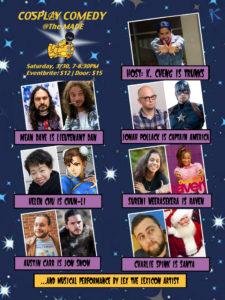
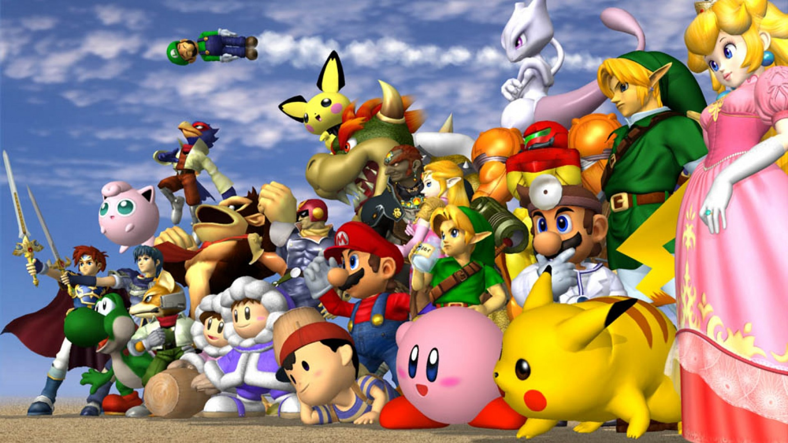

The MADE is the only all-playable video game museum in the world.
We were the first dedicated open to the public video game museum in the United States. Our collection houses over 5,300 playable games. The
MADE is a 501c3 nonprofit dedicated to the preservation of video
game history, and to educating the public on how video games are created. Our goal is to inspire the next generation of game developers.
Calendar
COSPLAY COMEDY NIGHT
The next Cosplay Comedy Night is:
Saturday, at 7:00 PM
Purchase tickets on Eventbrite!
Like and Share on Facebook!

You might see a member of the Jokestice League or the IncrediLOLs, cause
comedians will be telling jokes in cosplay, in character. Our Hulk of a lineup
have you laughing harder than vibranium. This Marvelous show in LA has
gone to cons, game stores, and all the shires where nerds live. Now its making
the Star Trek to the Rey Area.
The Museum of Art and Digital Entertainment is a 501c3 nonprofit with over
5,300 playable video games. $12 online/$15 at the door gets you access to
the show and raffle prizes, and another $5 gets you access to all the games!
(discount passes for 6:00-10:00 PM available at the MADE front desk. Just show
‘em your show ticket.) Hadou-Can you make it? Suuure you can!
Cosplay Comedy at The MADE is highly recommended for ages 16+ due to language and content.
Snacks and drinks available for purchase before the show or during our 10-minute intermission.
SCRATCH PROGRAMMING WORKSHOP FOR KIDS
The MADE hosts a free kids classes on Scratch, the programming education tool from MIT. No experience is
required for the class (click to sign up):
The classes take place at the museum at 3400 Broadway, Oakland, CA. Kids can spend the half-hour break in
between classes in the museum if they want to attend both classes. The long-running game programming
class covers a single small game project for kids to make in Scratch. You can view the games made at previous workshops on the Scratch site.
TOURNAMENTS
Super Smash Bros. Melee occurs weekly on Fridays
at 6pm, and Super Smash Bros. 64 every other
Saturday at 6pm. If you’d like to host a tournament,
send an email to info@themade.org and we'll set
something up!

Super Smash Brothers 64 tournaments are hosted
every other Saturday 6pm to 10pm at the MADE.
Please check the calendar for exact dates.